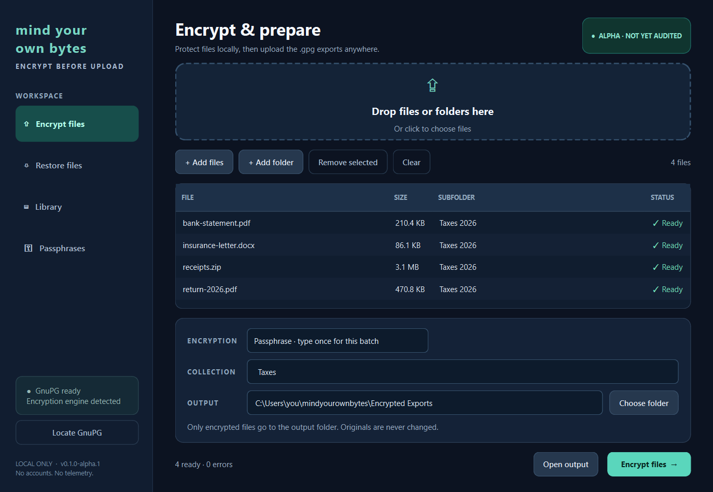

Every big cloud can read what you keep there, because it holds the keys.
This app moves the keys back to you. It encrypts your files on your own computer, with GnuPG, before they go anywhere.
What leaves your computer is standard OpenPGP. It opens with plain gpg, with or without this app, on any system, years from now.
No account. No telemetry. No network connections.
Why this exists
Cloud storage is a trade. You get space, and your files everywhere. The provider holds the keys, so it can read what you upload, and the big providers' terms say they do: files are scanned for search, previews, and abuse.
Most of the time that's harmless. But anything a company can read can also be breached, subpoenaed, misused by someone on the inside, or fed into a product you never agreed to.
The oldest fix still works best. Encrypt on your own computer, before anything leaves it. Then the provider stores bytes it can't read, and the keys stay with you.
“Privacy is necessary for an open society in the electronic age.”
Strong encryption has been free for decades. GnuPG, which does all of the cryptography in this app, has done it since 1999. What was missing was a way to use it without a command line, and without trading one company's lock-in for another's. This app is that way.
What it does
Encrypts files and folders that you drag in, or right-click in File Explorer, into standard OpenPGP .gpg files. Your originals are never changed.
Checks every file before calling it done. It decrypts each new copy again and compares it with your original, and throws away a copy that doesn't match.
Hides names when you ask it to, by packing everything into one archive. Your provider sees one .zip.gpg file, and nothing of what's inside.
Makes strong passphrases easy: seven random words, or 30 random letters and digits, with their strength stated exactly. An optional vault keeps them under one master passphrase.
Works with your OpenPGP keys from Kleopatra, including post-quantum keys with GnuPG 2.5 or later.
Restores carefully. Forged, damaged, and cut-short files are refused, with nothing written. Each download is compared with a checksum saved when it was made, and you're asked before an older or swapped copy is decrypted.
Works with any storage, because it never connects to any: Google Drive, OneDrive, Dropbox, iCloud, a NAS, or a USB stick. You upload the files yourself.
There's no account to make and nothing reporting back. The Windows download doesn't even contain its libraries' network code.
How it works
Choose files
Drag in files or folders, or right-click them in File Explorer and choose Encrypt with mindyourownbytes.
Choose how to protect them
Type one passphrase for the whole batch, use a saved one, or pick an OpenPGP key. The app can make a strong passphrase for you.
Choose where to save them
As separate files, or as one archive that hides their names. Each new file is decrypted again and checked before it's called done.
Upload them yourself
Copy the encrypted files to any cloud, drive, or stick. The app never touches the network.
Encrypt filesmindyourownbytes

To get files back, download the .gpg files and drop them on the Restore screen. The app works out how each one was protected, and asks first if a download isn't the copy you made.
Without this app
Your files never depend on this project still existing. Plain GnuPG opens them on any system:
In the app, Help > Restore on another computer walks through it on Windows, macOS, or Linux, and saves the steps as a text file to keep with your backups.
What your provider sees
It can see
File and folder names, unless you use one archive
Roughly how big each file is
When you upload, and how many files
An archive's own name and total size
With an OpenPGP key, which key a file is for
It can't see
What's in any file
The names, folders, number, and sizes of the files in an archive
Your passphrases and private keys, which never leave your computer
In the app, Help > What your provider sees shows this with your own files.
Honest limits
It's an early version, not independently audited. Try it with unimportant files first, and keep other backups.
Names show unless you use an archive.divorce-settlement.pdf.gpg says plenty on its own.
Lose your passphrase or key, and nobody can recover your files. That's the point, and the risk. Keep a copy somewhere other than the cloud you're protecting against.
It can't protect a computer that's already compromised, or files that already sit in a synced folder.
The Windows download isn't code-signed yet, so Windows warns about it. Check its SHA-256 against the release page first.
On Windows 10 and 11, the installer needs no administrator rights and includes GnuPG. If you already use Gpg4win, the app uses that instead, so your keys keep working. On Linux and macOS, run it from source.
It's free software under the GPL, version 3 or later, so nobody can ship a closed copy of a privacy tool that can't be checked. The most useful help right now is trying to break it: an independent security review is what this release is asking for.